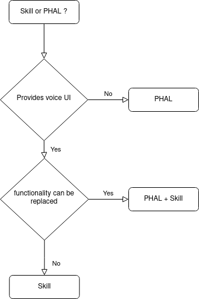

PHAL – Platform/Hardware Abstraction Layer
The Platform/Hardware Abstraction Layer (PHAL) in OpenVoiceOS (OVOS) provides a flexible, plugin-based system for integrating hardware-specific and platform-level functionality.
Usage Guide
PHAL plugins are loaded at runtime based on system compatibility and user configuration. You can:
- Install multiple PHAL plugins for system and hardware support.
- Rely on automatic hardware detection to load relevant plugins safely.
- Use AdminPHAL when elevated privileges are required.
Technical Explanation
PHAL Plugins
PHAL plugins dynamically extend your voice assistant's functionality by listening to events and integrating with system or hardware components. Examples include:
- System control: Restart, shutdown, or factory reset via
ovos-PHAL-plugin-system. - Audio management: Volume control with
ovos-PHAL-plugin-alsa. - Hardware support: Mark 1 and Mark 2 integrations using hardware detection.
Plugins are validated before loading. For example, the ovos-PHAL-plugin-mk2 checks for the presence of the SJ201 HAT before activating.
AdminPHAL
AdminPHAL is a specialized version of PHAL that loads plugins with root privileges. This allows for deeper OS integration—ideal for tasks like system configuration or device control. However, all admin plugins must be:
- Marked as admin in their entry point.
- Explicitly enabled in the config (
"enabled": true). - Carefully audited, as they can modify system state.
AdminPHAL and PHAL will not load each other's plugins.
Developing a PHAL Plugin
PHAL plugins usually consist of a validator (to determine compatibility) and an event listener. Here's a minimal example:
from ovos_bus_client import Message
from ovos_plugin_manager.phal import PHALPlugin
class MyPHALPluginValidator:
@staticmethod
def validate(config=None):
# Return False to prevent loading (e.g., missing hardware)
return True
class MyPHALPlugin(PHALPlugin):
validator = MyPHALPluginValidator
def __init__(self, bus=None, config=None):
super().__init__(bus=bus, name="ovos-PHAL-plugin-NAME", config=config)
self.bus.on("my.event", self.handle_event)
def handle_event(self, message):
self.bus.emit(Message("my.event.response"))
def shutdown(self):
self.bus.remove("my.event", self.handle_event)
super().shutdown()
More details on plugin packaging are available in the OVOS Plugin Manager documentation.
Choosing Between a PHAL Plugin and a Skill
Not sure whether to build a skill or a PHAL plugin? Here's a quick guideline:
- Use PHAL for low-level system or hardware integration.
- Use skills for voice interactions and user-facing features.
- In some cases, both might be appropriate—a PHAL plugin for backend support and a skill as a frontend interface.

Available Plugins
| Plugin | Description |
|---|---|
| ovos-PHAL-plugin-alsa | Volume control |
| ovos-PHAL-plugin-system | Reboot, shutdown, and factory reset |
| ovos-PHAL-plugin-mk1 | Mycroft Mark 1 hardware integration |
| ovos-PHAL-plugin-respeaker-2mic | Respeaker 2-mic HAT support |
| ovos-PHAL-plugin-respeaker-4mic | Respeaker 4-mic HAT support |
| ovos-PHAL-plugin-wifi-setup | Central Wi-Fi setup |
| ovos-PHAL-plugin-gui-network-client | GUI-based Wi-Fi setup |
| ovos-PHAL-plugin-balena-wifi | Wi-Fi hotspot setup |
| ovos-PHAL-plugin-network-manager | Network Manager integration |
| ovos-PHAL-plugin-ipgeo | Geolocation using IP address |
| ovos-PHAL-plugin-gpsd | Geolocation using GPS |
| neon-phal-plugin-linear_led | LED control for Mycroft Mark 2 |
Tips & Caveats
- Safe Defaults: Most plugins are hardware-aware and won't load if the required device isn’t detected.
- Admin Responsibility: AdminPHAL plugins have full system access. Only use trusted sources and review their code.
- Extensibility: PHAL is designed to grow with your system. Don't hesitate to build your own plugins for unique hardware.
Related Documentation
By decoupling system and hardware features from core logic, PHAL makes OVOS more modular, secure, and adaptable to any platform—from Raspberry Pi setups to full-featured smart assistants.